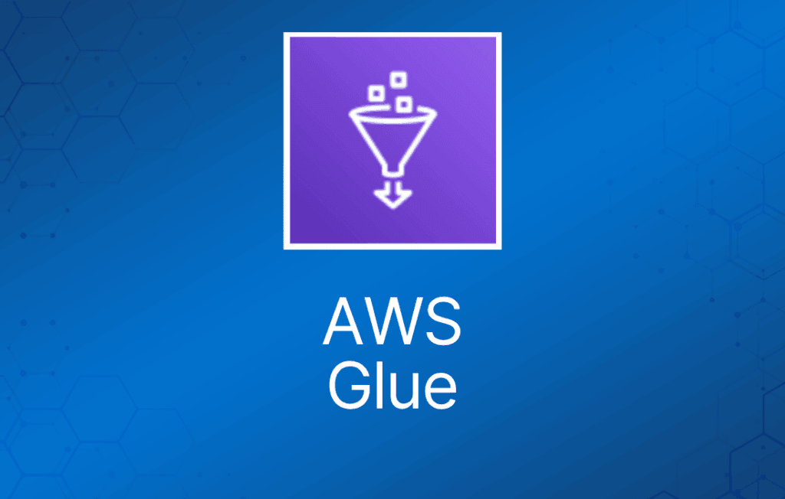

AWS Glue 是一种全托管、按需付费的 extract、transform、load（ETL）服务，可自动完成数据分析前耗时的数据准备步骤。
AWS Glue 通过 Glue Data Catalog 自动发现和剖析数据，并推荐和生成 ETL 代码，将源数据转换为目标 schema。
AWS Glue 在全托管、可横向扩展的 Apache Spark 环境上运行 ETL 作业，将数据加载到目标位置。
AWS Glue 还允许你设置、编排和监控复杂的数据流。
在 AWS 管理控制台中点击几下即可创建和运行 ETL 作业。
只需将 AWS Glue 指向你存储在 AWS 上的数据，AWS Glue 就会发现数据，并将相关元数据（例如表定义和 schema）存储在 AWS Glue Data Catalog 中。
一旦编入目录，数据即可立即搜索、查询并用于 ETL。
AWS Glue 由三部分组成：作为中央元数据仓库的 Data Catalog、可自动生成 Scala 或 Python 代码的 ETL 引擎，以及处理依赖解析、作业监控和重试的灵活调度器。
这些组件共同自动完成了数据发现、分类、清洗、丰富和移动中大量无差别的繁重工作，让你可以把更多时间花在数据分析上。
AWS Glue Crawler
你可以使用 crawler 用表来填充 AWS Glue Data Catalog。
这是大多数 AWS Glue 用户使用的主要方法。
crawler 一次运行可以爬取多个数据存储。
完成后，crawler 会在你的 Data Catalog 中创建或更新一个或多个表。你在 AWS Glue 中定义的 extract、transform、load（ETL）作业使用这些 Data Catalog 表作为源和目标。
ETL 作业从源 Data Catalog 表指定的数据存储读取数据，并写入目标 Data Catalog 表指定的数据存储。
AWS Glue crawler 连接到源或目标数据存储，按优先级顺序遍历 classifier 列表以确定数据的 schema，然后在 AWS Glue Data Catalog 中创建元数据。
元数据存储在 data catalog 的表中，并在 ETL 作业的编写过程中使用。
你可以按计划、按需运行 crawler，或基于事件触发，以确保元数据保持最新。
AWS Glue 自动生成用于提取、转换和加载数据的代码。
只需将 AWS Glue 指向源和目标，AWS Glue 就会创建 ETL 脚本来转换、扁平和丰富数据。
生成的代码为 Scala 或 Python，面向 Apache Spark 编写。
AWS Glue 通过提供名为 FindMatches 的 Machine Learning Transform 来帮助清洗和准备数据用于分析，实现去重和查找匹配记录。
使用场景
使用 AWS Glue 发现数据属性、转换数据并为分析做好准备。
Glue 可以自动发现存储在 Amazon S3 数据湖、Amazon Redshift 数据仓库以及运行在 AWS 上的各种数据库中的结构化和半结构化数据。
它通过 Glue Data Catalog 提供数据的统一视图，可使用 Amazon Athena、Amazon EMR 和 Amazon Redshift Spectrum 等服务进行 ETL、查询和报告。
Glue 自动为 ETL 作业生成 Scala 或 Python 代码，你可以使用已熟悉的工具进一步自定义。
AWS Glue 是 serverless 的，因此无需配置和管理计算资源。